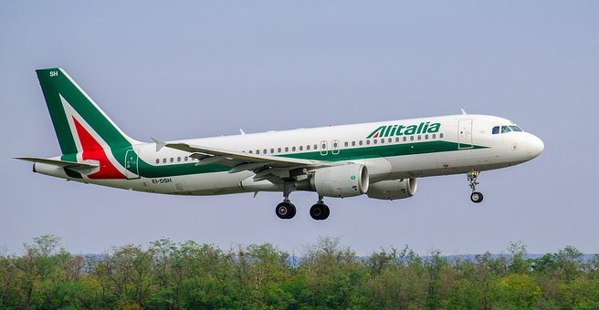

The Airbus A321 is a member of the Airbus A320 family of short to medium range, narrow-body, commercial passenger twin engine jet airliners. it carries 185 to 236 passengers. It has a stretched fuselage which was the first derivative of the baseline A320 and entered service in 1994, about six years after the original A320. The aircraft shares a common type rating with all other Airbus A320-family variants, allowing previous A320-family pilots to fly the aircraft without the need for further training.
In December 2010, Airbus announced a new generation of the A320 family, the A320neo (new engine option). The similarly lengthened fuselage A321neo variant offers new, more efficient engines, combined with airframe improvements and the addition of winglets (called Sharklets by Airbus). The aircraft delivers fuel savings of up to 15%. The A321neo carries up to 244 passengers, with a maximum range of 4,000 nmi (7,400 km) for the long-range version when carrying no more than 206 passengers.